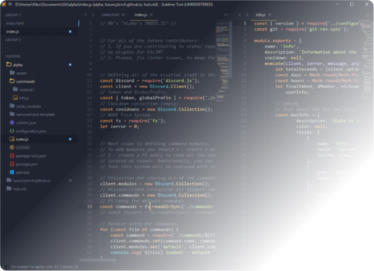
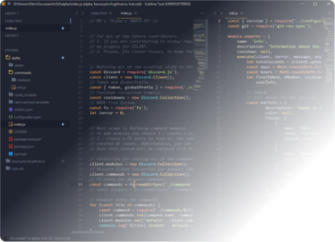

Like, c'mon dude...
This page is in Segoe UI. If you didn’t know, Windows uses this font as default for all of the interface elements. So does Microsoft web page. That only says so much about my personality...
This page is also going to be purely black and white.
Unless you would want to...
Jokes aside...
If you are visiting my place, you are either interested in my services, or you are just passing by. Either way, make sure to check out my works down below. :)
My Music
I’ve been a digital musician for about 3-4 years right about now. I am quite versatile, proficient in a lot of musical genres, but I mostly enjoy making lo-fi, world, piano and other various genres, like video game OSTs. I am also a proud member of VGM
community.
Even though I do spend a lot of time on web development, music is still my main profession.
My tunes are available on
SoundCloud,
YouTube and
Bandcamp, though I post on SoundCloud much more often.
Some music I made for other people I never posted on my social media, like this one - a song I made for a friend’s project called Daybreak! You can occasionally find my stuff here and there
Developer Projects
My developer experience was a little bit shorter than music - I’ve been studying JS, HTML, CSS, PHP for 2 years. I have wide knowledge in web department, node.js and discord.js framework.
 

Alpha was an experiment of mine simply to learn the ways of discord.js. Right now alpha is used as a clean template for it’s past contributors!
This project is most likely to turn into a framework for easier and cleaner bot development.